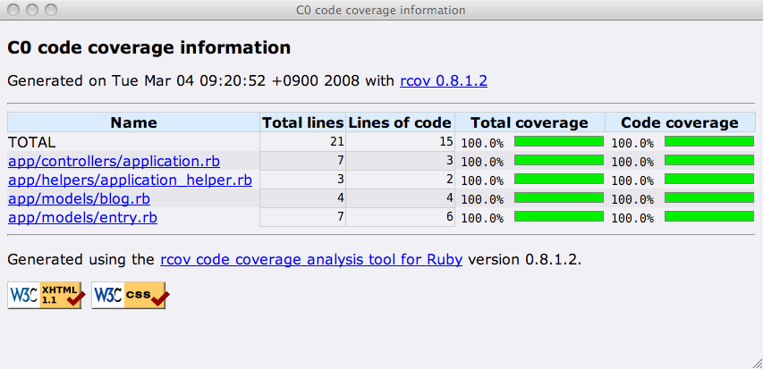

スはスペックのス 【第 2 回】 RSpec on Rails (コントローラとビュー編)
書いた人: かくたに、もろはし
- この連載について
- 前回までのあらすじ
- 今回の実装のゴール
- Rails と RSpec のバージョンアップ
- RSpec 1.1 の新機能
- 今回の実装の作戦を立てる
- コントローラのテスト
- ビューのテスト
この連載について
この連載では Test::Unit を代替するテスティングフレームワークである RSpec (先日、サイトが移転しました。新しい URL は http://rspec.info です) の使い方や、 その背景にある考え方を何回かに分けて連載形式でお届けします。 連載全体を通じて、次のような内容を紹介したいと考えています。
- RSpec とは何か。RSpec の使い方、特に RSpec on Rails を使った Rails アプリ開発への適用
- テスト駆動開発 (TDD:Test Driven Development) の進め方と、テスト駆動開発的な設計アプローチ
- RSpec の仕組みと拡張の方法
対象読者
前回の連載に目を通している方を対象としています。
前回の連載は、Ruby 標準添付のテスティングフレームワークである Test::Unit を多少は使ったことがあることを前提としていますが、 いわゆるテスト駆動開発やテストファーストといったプログラム技法の経験は前提としていません。
また、前回の後半から、Ruby on Rails を使った Web アプリケーションをテスト駆動で開発しているので、 Ruby on Rails の初歩的な知識も前提としています。
対象とする RSpec のバージョン
執筆時点での最新リリースバージョンを対象とします。 つまり、今回は RSpec 1.1.3 です。 Ruby on Rails も同様に最新のリリースバージョンを対象とします。 こちらは 2.0.2 を対象とします。
RSpec と Rails のいずれも、前回の執筆以降にバージョンアップされました。 本文で両者をアップデートする手順を紹介します。
この連載での「テスト」という言葉の使い方について
RSpec も少しずつ知名度を高めつつあり、さまざまな場所で紹介されるようになりました。 その際に、RSpec は BDD (Behaviour Driven Development)、「振舞駆動開発」あるいは「ビヘイビア駆動開発」のフレームワークと紹介されることが多いです。
「BDD は TDD を進化させたもの」という意見も見かけますが、私たちは__「TDD とは BDD であり、BDD とは TDD である」という立場を取り、 TDD で行っていた「テスト」を「ビヘイビア」や「スペック」といった言葉に__言い換えません。 つまり、ツールとして RSpec を使いながら、TDD をします。
この考えの詳細については連載第1回の「なぜ、RSpec なのか」を参照してください。
また、今回の連載では私たちが別段 BDD という言葉にこだわらない理由が明らかになります。お楽しみに。
今回の説明範囲
今回は、次の 4 点を取りあげます。
- RSpecがサポートする周辺ツールの紹介 (RCov、Rails の rake stats との統合)
- RSpec on Rails を使ったコントローラの初歩的なテスト
- RSpec on Rails を使ったビューの初歩的なテスト
- __RSpec on Rails ではすべてがユニットテスト__であること
これらについて、簡単なブログアプリケーションをテスト駆動で開発を進めながら説明していきます。
前回までのあらすじ
前回は RSpec の概要と簡単な使い方を説明した後、RSpec on Rails を使った Web アプリケーションの開発を始めました。 題材は簡単なブログアプリケーション、その名も myblog です。
前回の連載の最後の時点のサンプルアプリケーション (myblog) 一式を zip 形式で圧縮したファイルを用意しました。
文字コードはUTF-8です。どうぞご利用ください。
テストの実行
前回やったことを思いだすために (もう昨年のことですしね)、myblog のテストを実行してみましょう。
$ rake db:migrate # 今回提供したmyblog-0021.zipを展開して作業する場合は必要
$ rake db:test:prepare # 今回提供したmyblog-0021.zipを展開して作業する場合は必要
$ script/spec --color --format specdoc spec/**/*_spec.rbBlog#nameが設定されていない場合: - バリデーションに失敗すること - :nameにエラーが設定されていること Blog - は複数の記事を所有できること Blog に記事を投稿できた場合: - 記事の件数が1件増えること Entry - は特定のブログに属すること Entry#posted_onが入力されずに保存された場合: - Entryの作成日は投稿日であること Entry#posted_onを明示して保存された場合: - 入力された日付が投稿日であること Finished in 0.159336 seconds 7 examples, 0 failures
zsh以外のシェルをお使いの場合、’*/_spec.rb’ がネストしたディレクトリを展開しないかもしれません。その場合は「rake spec」で代用してください。後で触れるように、spec コマンドに渡すコマンドラインオプションは $RAILS_ROOT/spec/spec.opts に指定できます。
私たちは Blog と Entry のごくごく基本的な機能をテスト駆動で実装したところで力尽きたのでした。
前回実装したモデルの関連は次のようなものです。
+------+ has_many +-------+
| Blog |1 --------------> *| Entry |
+------+ belongs_to +-------+Blog クラスはユーザが開設しているブログ (たとえば「moro の日記) を表現するクラスです。
Entry クラスはブログに投稿されている 1 件 1 件の記事 (たとえば「ニコニコ動画デビュー by 札幌でのプレゼン」) のことです。
RSpec (on Rails) がサポートする周辺ツール
テストを実行したついでに、前回書いたコードを使って RSpec on Rails の機能を 2 つ紹介します。 ひとつは、RCov を使ったカバレッジの計測。もうひとつは rake stats の RSpec 統合です。 (前者は RSpec そのものの機能ですが、後者は RSpec on Rails 特有の機能です。)
RCov による C0 カバレッジの計測
RCov は Mauricio Fernandez さん作の Ruby 用のカバレッジツールです。
「カバレッジ」という概念に馴染みのない方のために簡単に説明しておきます。カバレッジとは乱暴に言うと「プロダクトコードに対するテストの網羅率 (どれだけテストできているか)」です。「どれぐらいか」といってもそこには質的な違いがあり、カバレッジの測定でよく使われている指標は次の 3 つです:
- C0: ステートメントカバレッジ (命令網羅率)
- C1: ブランチカバレッジ (分岐網羅率)
- C2: コンディションカバレッジ (条件網羅率)
RCov が測定できるのは、C0 のステートメントカバレッジです。C0 はプロダクトコードの各行について少なくとも 1 回はテストから実行されているかを測定したものです。
ユニットテストでは C1 まで網羅することが望ましいのですが、RCov では C0 しか測定しません (その理由は RCov の FAQ(英語) を参照してください)。
RSpec は RCov を利用する Rake タスクを標準で用意しています。このタスクは RSpec on Rails をインストールするとすぐに使えるようになっています。
では、前回書いたコードのカバレッジを測定してみましょう。RCov をまだインストールしていない方は gem コマンドでインストールしてください。 Rcov の執筆時点での最新バージョンは 0.8.1.2.0 です。
$ gem install rcovRCov をインストールできたら、次の Rake タスクを実行してください。
$ rake spec:rcov
(in /path/to/myblog)
.......
Finished in 0.192235 seconds
7 examples, 0 failuresテストの実行が無事に終われば、$RAILS_ROOT/coverage ディレクトリが作成されていると思います。 coverage ディレクトリには次のようなファイルができているはずです。
$ ls coverage
app-controllers-application_rb.html app-models-entry_rb.html
app-helpers-application_helper_rb.html index.html
app-models-blog_rb.htmlこのディレクトリにある coverage/index.html を Web ブラウザで開いてみましょう。 
テストから先に書いているので C0 レベルでのカバレッジは 100% です。当然ですね :-)
もっと詳しく
RCov の RSpec への統合の詳細は以下を参照してください。
- RSpec プロジェクトのサイトドキュメント
- Spac::Rake::SpecTask の RDoc
- RSpec の Rake タスクのソースコード
rake stats の統合
RSpec on Rails をインストールすると、Rails が標準で用意している Rake タスクである stats が RSpec に対応します。 stats タスクは、プロダクトコードとテストコードの記述量をレポートする Rake タスクです。これを実行する手順は次の通りです。
$ mkdir spec/views # このディレクトリが無いと動作しない
$ mkdir spec/controllers # このディレクトリが無いと動作しない
$ rake stats
(in /path/to/myblog)
+----------------------+-------+-------+---------+---------+-----+-------+
| Name | Lines | LOC | Classes | Methods | M/C | LOC/M |
+----------------------+-------+-------+---------+---------+-----+-------+
| Controllers | 7 | 3 | 1 | 0 | 0 | 0 |
| Helpers | 3 | 2 | 0 | 0 | 0 | 0 |
| Models | 11 | 10 | 2 | 1 | 0 | 8 |
| Model specs | 84 | 70 | 0 | 0 | 0 | 0 |
| View specs | 0 | 0 | 0 | 0 | 0 | 0 |
| Controller specs | 0 | 0 | 0 | 0 | 0 | 0 |
| Helper specs | 0 | 0 | 0 | 0 | 0 | 0 |
+----------------------+-------+-------+---------+---------+-----+-------+
| Total | 105 | 85 | 3 | 1 | 0 | 83 |
+----------------------+-------+-------+---------+---------+-----+-------+
Code LOC: 15 Test LOC: 70 Code to Test Ratio: 1:4.7表の「Name」カラムを見ると、下半分が「Model/View/Controller/Helper specs」に変更されています。 これは単に用語が RSpec のものになっているだけでなく、集計対象も $RAILS_ROOT/spec ディレクトリ以下が対象となっています。
いまの時点では、プロダクトコード 1 行に対して RSpec で書いたテストコードの行数 (Code to Test Ratio) が 4.7 行と、5 倍近くになっています。
今回の実装のゴール
前回やったことを思い出したので、私たちの myblog の今後を考えましょう。 基本的なモデルは開発したので、これを利用する画面を用意したいですね。
これからの myblog
myblog にはパッと考えただけでも次のような機能が必要になりそうです。
- 新しいブログを開設できる
- ブログに記事を投稿できる
- ブログのトップページには、ブログの情報と最新の記事を表示する
- (このとき、最大表示件数を絞る必要がある……とりあえず 5 件表示させるようにしましょ)
必要な機能や欲しい機能はこれら以外にもいくらでもがありますが、いずれにしても今回だけですべてを説明しながら実装することはできません。 これらの基本的な 3 つの機能だけでも手一杯です。今回実装する機能を決めます。
今回の実装のゴール
… …決めました。ブログのトップページを表示する機能を分割して、今回はその一部を実装します。つまり:
- ブログのトップページを表示する。表示する情報はブログの情報のみ
です。今回実装しないことにした機能は:
- ブログのトップページには、ブログの最新の記事を表示する
- (このとき、最大表示件数を絞らないと……とりあえず 5 件表示させるようにしましょ)
です。なぜこのように分割したのかというと、何よりもまず、説明の都合です。 今回は簡単でもよいからコントローラとビューのスペックの両方を紹介したいからです。 RSpec を使うとヘルパーやルーティングのテストも書けるのですが、これらについては次回以降に取りあげます。
もう一つの理由は「垂直分割アプローチ」を繰り返すことで機能を実現したいからです。垂直分割アプローチについては後述します。
Rails と RSpec のバージョンアップ
前回の連載記事を寄稿してから今日までの間に、私たちが RubyConf2007 に出かけたり、 JPUG と Ruby 札幌の合同セミナーに参加していたら、Rails や RSpec のバージョンが上がってしまいました。
まずは、RSpec と Rails のそれぞれをバージョンアップすることから始めましょう。
Rails 2.0.2 にバージョンアップ
既にバージョンアップされている方には関係のない話ですので、読み飛ばしてください。
アプリケーションで利用する Rails をバージョンアップする方法には複数の選択肢があります。
今回は説明が一番簡単な、RubyGems を利用した方法を説明します。ネットワークへの接続が必要です。 vendor/rails を利用する場合は、次の 4 つの手順を実施します。
- Rails 本体のバージョンアップ
- config.breakpoint_server の削除
- Cookie のシークレット文字列の設定
- バージョンアップできたことの確認
手順そのものはこの連載の中心的な話題ではありませんので、簡単に示すだけに留めます。
Rails 本体のバージョンアップ
RubyGems で Rails 2.0.2 をインストールします。
$ gem install rails -v 2.0.2その後、$RAILS_ROOT/config/enviroonment.rb にある、RAILS_GEM_VERSION で指定している Rails のバージョンを変更します。参考までに差分を載せておきます。
diff --git a/config/environment.rb b/config/environment.rb
index 5db2d3a..dbfbd06 100644
--- a/config/environment.rb
+++ b/config/environment.rb
@@ -5,7 +5,7 @@
# ENV['RAILS_ENV'] ||= 'production'
# Specifies gem version of Rails to use when vendor/rails is not present
-RAILS_GEM_VERSION = '1.2.3' unless defined? RAILS_GEM_VERSION
+RAILS_GEM_VERSION = '2.0.2' unless defined? RAILS_GEM_VERSION
# Bootstrap the Rails environment, frameworks, and default configuration
require File.join(File.dirname(__FILE__), 'boot')さらに、rails:update タスクを実行すると javascript や config/boot.rb などのアプリケーションレベルに配置されているファイルを 2.0.2 が提供するものへとアップデートします。
$ rake rails:updateconfig.breakpoint_server の削除
Rails2.0 では ruby-debug が統合されました。このため、breakpoint_server オプションは不要になりました。 $RAILS_ROOT/config/environments/development.rb にある、config.breakpoint_server = true の記述を削除します。 参考までに、削除前後の差分を載せておきます。
diff --git a/0023/myblog/config/environments/development.rb b/0023/myblog/config
/environments/development.rb
index 0589aa9..568ccd0 100644
--- a/0023/myblog/config/environments/development.rb
+++ b/0023/myblog/config/environments/development.rb
@@ -8,9 +8,6 @@ config.cache_classes = false
# Log error messages when you accidentally call methods on nil.
config.whiny_nils = true
-# Enable the breakpoint server that script/breakpointer connects to
-config.breakpoint_server = true
-
# Show full error reports and disable caching
config.action_controller.consider_all_requests_local = true
config.action_controller.perform_caching = falseCookie のシークレット文字列の設定
Rails 2.0 は、デフォルトではセッション情報を Cookie に格納します。これに伴い、Cookie に格納されているセッション情報の改竄を検知するためにシークレットキー文字列の設定が必須になりました。
そのための設定を config/environment.rb に追記します。シークレットキー文字列は 30〜40 文字程度の長さにします。30 文字より少ないと Rails から「短すぎる」と怒られてしまいます。逆に、長すぎても暗号の強度には寄与しません[^1]。ここでは手っ取り早い方法を取ります。
$ script/runner 'puts CGI::Session.generate_unique_id'
ce053ab2dfc17fbe2ee2a8675d83952f出力された文字列を、:secretの値として config/environment.rb に追記します。 下記のように、 config/environment.rb というファイルの Rails::Initializer.run のブロックの最後にでも記入してください。
念のために書いておきますが、シークレット文字列はアプリケーション毎に異なるべきです。上記のシークレット文字列をそのままコピーせずに、必ず各自の環境で生成しなおしてください。
config/environment.rb
...Rails::Initializer.run do |config|
# Settings in config/environments/* take precedence over those specified here
...
# See Rails::Configuration for more options
config.action_controller.session = {
:session_key => '_myblog_session',
:secret => 'ce053ab2dfc17fbe2ee2a8675d83952f'
}
endバージョンアップできたことの確認
script/about コマンドで Rails を構成するフレームワーク群のバージョンが 2.0.2 になっていることを確認しておきましょう。
$ script/about
About your application's environment
Ruby version 1.8.6 (i686-darwin9.1.0)
RubyGems version 1.0.1
Rails version 2.0.2
Active Record version 2.0.2
Action Pack version 2.0.2
Active Resource version 2.0.2
Action Mailer version 2.0.2
Active Support version 2.0.2
Edge Rails revision rel_2-0-2
Application root /path/to/myblog
Environment development
Database adapter sqlite3
Database schema version 2大丈夫そうです。
RSpec on Rails のバージョンアップ
では次に、RSpec (と RSpec on Rails) のバージョンも上げます。手順は次の 4 手(オプションも含めれば 5 手)です。
- RSpec on Rails 1.0.8 のアンインストール
- RSpec on Rails 1.1.3 のインストール
- 関連ファイルの再生成
- オプション: spec.opts ファイルの設定
- バージョンアップの確認
RSpec on Rails 1.0.8 のアンインストール
連載が長期にわたってしまうので、前回の連載で紹介したような、 バージョンを固定するインストール方法はあまり適切とはいえませんでした。ごめんなさい。 ここでは、連載中に RSpec のバージョンが上っても問題ない方法にしたいと思います。 そのためにまず、バージョンが固定されている現在の RSpec on Rails をアンインストールします。
$ ruby script/plugin remove rspec
$ ruby script/plugin remove rspec_on_railsRSpec on Rails 1.1.3 のインストール
新しいバージョンの RSpec と RSpec on Rails をインストールし直します。
今回は固定したバージョンではなくて、リリースされている最新版をインストールするようにします。
$ ruby script/plugin install http://rspec.rubyforge.org/svn/tags/CURRENT/rspec
$ ruby script/plugin install http://rspec.rubyforge.org/svn/tags/CURRENT/rspec_on_railsこの形式でインストールしておけば、今後は新バージョンがリリースされても「$ ruby script/plugin update」コマンドですぐ更新できるはずです。
RSpec on Rails のインストールについてもっと詳しく
これ以外の RSpec on Rails のインストール方法 (svn:externals を使う方法や、tar.gz からインスールする方法) は、 RSpec プロジェクトのサイトに掲載されています。 こちらも参考にしてください。
関連ファイルの再生成
RSpec on Rails のバージョンを上げた場合には、アプリケーションレベルに配置されている RSpec 関連ファイルを再生成してください。
$ script/generate rspec
exists spec
overwrite spec/spec_helper.rb? [Ynaqd] y # 今回は上書きする
identical spec/spec_helper.rb
force spec/spec_helper.rb
identical spec/spec.opts
create spec/rcov.opts
overwrite script/spec_server? [Ynaqd] y # 今回は上書きする
force script/spec
create stories
create stories/all.rb
create stories/helper.rb関連のファイルは、ときどきファイルに増減があったり、内容に変更があります。 spec_helper.rb や spec/spec.opts で変更が衝突した場合は手動でマージしてください。
オプション: spec.opts ファイルの設定
rake の spec タスクへのオプションを設定することができます。この手順はスキップしても問題ありません。
spec/spec.opts ファイルの設定にはデフォルトでは “–backtrace” (-b) が指定されています。 このオプションを指定すると、テストに失敗した際に詳細なバックトレースを出力します。 これは、好みに応じて削除してしまってよいでしょう。私 (かくたに) は削除しています。
バージョンアップの確認
Rails 本体と同様に、RSpec もバージョンアップできていることを確認しておきましょう。
script/spec -v
RSpec-1.1.3 (build 20080131122909) - BDD for Ruby
http://rspec.rubyforge.org/無事にアップデートできたようです。
RSpec 1.1 の新機能
ここで RSpec 1.1 の新機能をごくごく簡単に紹介しておきます。
執筆時点での RSpec の最新バージョンは 1.1.3 です。1.1.1 〜 1.1.3 のリリースはバグ修正や細かい機能拡張が中心のメンテナンスリリースです (メンテナンスリリースでの変更点の詳細は CHANGES を参照してください)。
開発チームの中心メンバーである David Chelimsky さんのブログのエントリによると、RSpec 1.1 での目玉となる機能は次の 3 点です。
- Story Runner の登場
- ネストした describe のサポート
- Test::Unitとの相互運用性の向上
以下ではそれぞれについて簡単に紹介します。
Story Runner の登場
るびま 0022 号の RubyConf2007 レポートで紹介した、rbehave を RSpec に統合した Story Runner がリリースされました。
リリースされたばかりの新機能なので、仕様や API がそれなりに安定してきたらこの連載でも取りあげたいと思います。
RSpec では、過去に少なくとも 2 度、劇的な API 変更が行われました。私たちはそのことを忘れていません。Story Runner の API でも同様の激変があっても何ら不思議ではないと考えています。私たちは経験から学んで、少し慎重になっています :-)
ネストした describe のサポート
前回の連載では Behaviour (振舞) として説明した、describe do … end のブロックをネストして書けるようになりました。
describe をネストさせて記述した際には、外側の describe ブロックで定義したインスタンス変数や before / after の設定、定義した独自のメソッドは、内側の describe ブロック からも見えます。
これは、RSpec が実行時に describe ブロックのネストに応じて動的にサブクラスを生成しているからですが、まあ、‘「魔法と割り切って」’もよいと思います。
これにともなって、DSLの実装としても、describe do … end のブロック付きメソッド呼び出しに対応する RSpec のクラスも変更され、ExampleGroup クラスとなりました。これまでの Behaviour (振舞) クラス はもう存在していません。RSpec のソースコードツリーからも behaviour.rb というファイルは削除されています。すなわち、Behaviour Driven Development のためのツールと呼ばれる RSpec にはもう Behaviour を表現するクラスはありません。
RSpec の実装とは、RSpec で記述する DSL に対応する語彙を実装したものです。その語彙から Behaviour という語が消えているわけですから、いまや BDD という言葉にこだわる理由もありません。
この連載での私たちの立ち位置を再度述べておきます。「TDD とは BDD であり、BDD とは TDD です。」
Test::Unit との相互運用性の向上
describe や Object#should、Object#should_not といった RSpec の API を従来の Test::Unit からも使えるようになりました。この機能は、Test::Unit から RSpec への段階的な移行を支援するのが目的です (たぶん)。
詳しくは前掲の David Chelimsky さんのブログのエントリを参照してください。
今回の実装の作戦を立てる
またしても前置きが長くなってしまいましたが、おかげで RSpec と Ruby on Rails を最新版にアップデートできました。 また RSpec の新機能もざっと確認できました。そろそろ本当に今回ターゲットとしている機能を実装しましょう。
今回も、前回のモデルの開発と同じように「レッド - グリーン - リファクタリング」というテスト駆動開発の小さなステップを小さく、短い単位で積み上げていきます。 作業単位の理想は数分サイクルで「レッド - グリーン - リファクタリング」を 1 周させられることです。これを目指して実装の作戦を立ててみます。
水平分割アプローチと垂直分割アプローチ
ところで前回は Rails アプリケーションの構成要素 (モデル・コントローラ・ビューから構成されるいわゆる MVC モデル) のうち、モデルだけをテスト駆動で開発しました。
前回モデルを実装した時のように、アプリケーションを論理的な層に分割したうえで、分割した層ごとに実装していくアプローチを__「水平分割アプローチ」__と呼びます。
一方、水平分割アプローチとは対照的に、アプリケーションを、提供する機能ごとに分割して、分割した機能ごとに実装していくアプローチを__「垂直分割アプローチ」__と呼びます。
私たちの myblog ではまだモデルしか実装していません。Rails アプリケーションとして動作させるためには、コントローラとビューの実装が必要です(実装しないことには、この連載で RSpec on Rails の機能も説明できませんしね)。
今回の実装のターゲットとする機能を:
- ブログのトップページを表示する。表示する情報はブログの情報のみ
とした理由はここにあります。それは、もっとも手早く簡単に「垂直分割アプローチ」を実践するためです。
「手早く簡単に」ということを考慮すると、データを投入したり更新するよりも、既にあるデータを表示させるほうがよさそうです。 必要なデータはあらかじめデータベースにロードしてしまえばよいのですから。
やるべきことを TODO リストに書き留めておきます。実際の開発では、ホワイトボードやメモ用紙、裏紙に書き留めることが多いです。
TODOリスト
- ブログのトップページにブログの名前を表示する
「ブログの情報」といってもいまの時点ではブログの名前しかありませんので、TODOリストではそれを明示しました。
「必要な作業は何だろう？」
ところで「ブログの情報」とは何でしょうか？ ……いまのところ「ブログ名」ぐらいしかありません。 では「ブログの名前を表示する」を実現するために Railsアプリケーションで必要な作業を考えます。
この機能のための URL は旧来の Rails の規約に従います――ということは、デフォルトのルーティング設定に従うということです。 つまり「blogs/show/:id」で特定のブログが表示されるようにします。
Rails の規約に従うのは、考えること (と説明すること) を減らすためです。Rails の規約に従えば、今回の「ブログの名前を表示する」という機能を実現するのに必要な作業は次の 2 つです。TODO リストを更新しましょう。
TODO リスト
- ブログのトップページにブログの名前を表示する
- コントローラにアクションを用意する
- アクションの結果を表示するビューを用意する
いちどにひとつずつ
この段階ではまだ、作業を分単位でやりとげられる自信が私たちにはありません。 テスト駆動で開発する場合には「いちどにひとつずつ」が基本です。 そして、いかに「ひとつ」の作業の大きさを数分単位へと分割していくかがテスト駆動開発者の腕の見せどころです。
コントローラのテスト
RSpec を使えば、コントローラとビューのどちらからでもテスト駆動で実装可能です(いずれやってみたいと思います)。今は順当に、コントローラから実装していきます。つまり「コントローラにアクションを用意する」を先に片づけます。
もう一度。「必要な作業は何だろう？」
では「コントローラにアクションを用意する」というタスクをテスト駆動で開発するにはどうすればよいでしょうか？ 別の言い方をすれば、何をテストすればよいのでしょうか？ 答えを先に言ってしまうと、テストするのは「実装対象となるユニットの責務」です。
ユニット
ユニットとは、ソフトウェアを構成する要素の論理的なまとまりのことです。 Ruby ではクラスに対応することが多いですが、必ずしもクラスであるとは限りません。 その粒度は状況によりけりです。 メソッドやモジュールがユニットになることもあれば、ライブラリがユニットとなることもあるでしょう。
責務
「責務 (Responsibility)」とはオブジェクト指向設計界の業界用語です。 もう少し普通の言葉に言い換えると「オブジェクトが責任を持って果たすべき仕事」です。 以後、この連載で「責務」という言葉はこの意味合いで使います。
テスト駆動開発は、ユニットの責務のテスト (つまり、ユニットテスト) が開発を引っ張っていく (駆動する) からテスト駆動開発です。そして、RSpec はこうしたテスト (つまり、ユニットテスト) を支援します。であれば、今回実装したいユニットであるコントローラの責務を考えることが、コントローラの実装に必要な作業を考えることになります。
コントローラの責務
RSpec on Railsでは、コントローラの責務を次の 3 つだと捉えています。
- 受信したリクエストに対して適切なレスポンスを返す
- ビューで使用するのに必要なモデルオブジェクトをロードする
- レスポンスを表示するのに適切なビューを選択する
1 つ目と 2 つ目はわかりやすいですが、3 つ目に注意してください。Rails ではコントローラ自身は、ビューを描画__しません__。実際にビューの描画をするのは、ActionView の責務 (仕事) です。
コントローラの責務を考えてみることで、こなすべき TODO 項目を洗い出せるのではないでしょうか。
コントローラでテストすべきこと
「コントローラの責務」に従って、ブログの名前を表示するためのコントローラでテストすべき項目をリストにします。 Rails の規約に従うので、コントローラの名前は BlogsController です。 特定のブログを表示するのだから、アクションの名前は show にしましょう。
受信したリクエストに対してレスポンスを返す
今回実装したいリクエストの形式は、Blog インスタンスのidを指定した「/blogs/show/:id」です。 このリクエストに対して HTTP レスポンスがステータスコードとして「200」を返せばよさそうです。
ビューで使用するのに必要なモデルオブジェクトをロードする
これは、「/blogs/show/:id」で指定された id の Blog インスタンスをロードできていればよさそうです。 これだと config/routes.rb を修正しなくてもよいです。これは、説明の手間を少し省けるので、記事を書く私たちにとっても助かります。
レスポンスを表示するのに適切なビューを選択する
ブログの情報を表示するためのビューを erb のテンプレートとして用意して、それを選択していることを検証できれば、この責務を果たしているといえるのではないでしょうか。Rails の規約に従えば「app/ivews/blogs/show.erb.html」を選んでいれば良さそうです
TODO リストの更新
……やるべきことがまた細かく分割されました。忘れてしまう前に TODO リストを更新しておきます。
- ブログの名前を表示する
- コントローラにアクションを用意する
- /blogs/show/:id のリクエストに対する HTTP レスポンスのステータスコードは 200
- /blogs/show/:id で指定した Blog インスタンスをロードする
- app/views/blogs/show.erb.html を選択する
- アクションの結果を表示するビューを用意する
- コントローラにアクションを用意する
- ブログの最新記事を表示する
- ブログの最新記事を最大 5 件表示する
これぐらい作業が細かくなれば、1 つ 1 つをどうにか分単位でこなせそうです。
コントローラのテストの雛形の作成
TDD のサイクルを回すための下準備をします。
RSpec on Rails には RSpec 用のテストの雛形を生成するためのジェネレータも用意されています。 コントローラのテストを生成するには rspec_controller ジェネレータを使います。 オプションの渡し方などの使い方は Rails 標準の controllers ジェネレータとほとんど同じです。
rspec_controller ジェネレータ
RSpec on Rails が用意するジェネレータには、rspec_controller 以外にも rspec_model と rspec_scaffold ジェネレータが用意されています。
(RSpec on Rails 1.1.3 現在では、ビュー専用のジェネレータは用意されていません)
$ ruby script/generate rspec_controller blogs show
exists app/controllers/
exists app/helpers/
create app/views/blogs
exists spec/controllers/
create spec/helpers/
create spec/views/blogs
create spec/controllers/blogs_controller_spec.rb
create spec/helpers/blogs_helper_spec.rb
create app/controllers/blogs_controller.rb
create app/helpers/blogs_helper.rb
create spec/views/blogs/show.html.erb_spec.rb
create app/views/blogs/show.html.erb生成されたファイルは、それぞれ次のようになっています。
app ディレクトリ
- app/controllers/blogs_controller.rb
- app/helpers/blogs_helper.rb
- app/views/blogs/show.html.erb
Rails のコントローラとビュー、それからヘルパーに対応する雛形が生成されています。
spec ディレクトリ
- spec/controllers/blogs_controller_spec.rb
- spec/helpers/blogs_helper_spec.rb
- spec/views/blogs/show.rhtml_spec.rb
ここで、spec 以下に生成されるファイル群に注目してください。 RSpec on Rails ではコントローラ、ビュー、ヘルパーのテストがそれぞれ別のファイルに分かれています。 これは、RSpec on Rails がこれらの要素をすべて「ユニット」だと捉えているからです。
RSpec on Rails ではすべてが「ユニットテスト」
Rails 標準のテスティング環境では ActiveRecord のモデルに対するテストを「ユニットテスト」と呼んでいます。しかし、RSpec on Rails はその立場に立ちません。 先ほど「ユニットとはソフトウェアを構成する要素の論理的なまとまりである」と説明しました。では、Ruby on Rails を使ったアプリケーションにおけるユニットとは何でしょうか。
RSpec on Rails にとってのユニットは主に次の 4 つです。
- モデル
- コントローラ
- ビュー
- ヘルパー
RSpec on Rails を使って書くテストはすべてが「ユニットテスト」です。 それぞれがアプリケーションを構成する「ユニット」ですから、 RSpec on Rails が支援するユニットテストではそれぞれをユニット単位で独立してテストできます。
これらをユニットとして捉えているという根拠は Spec::Rails::Example の rdoc の記述も参考にしてください。
この 4 つに加えて、ルーティングや Rails で利用する Ruby ライブラリ ($RAILS_ROOT/lib の下に配置されるもの) や、プラグインもユニットと考えてもよいかもしれません (そうすると 7 つですね)。
Rails のユニットテスト、ファンクショナルテスト、インテグレーションテスト
Rails 標準のテスティング環境では、独立してテストできるユニットとなっているのはモデルだけです。この意味において、Rails 標準のテスティング環境がモデルのテストを「ユニットテスト」と呼んでいるのは正しいです。コントローラやビュー、ヘルパーをユニットとして扱うテストはサポートされていません。
Rails 標準のテスティング環境でコントローラやビュー、ヘルパをテストするには「ファンクショナルテスト」や「インテグレーションテスト」を利用します。
ファンクショナルテストは主にコントローラをテストするためのテストです。ファンクショナルテストではコントローラはビューと結合され(ヘルパーも同様に結合されます)、さらにはフィクスチャを通じてモデルとも結合します。結合した状態での機能 (ファンクション) をテストするからファンクショナルテストと呼んでいるのでしょう。
インテグレーションテストはモデル・ビュー・コントローラという Rails アプリケーションの 3 つのコンポーネントに加えて、ルーティングやセッションも含めたアプリケーションの外側からのテストを支援します。アプリケーションを全体として統合 (インテグレーション) した状態でテストするからインテグレーションテストです。
RSpec on Rails のテスティング環境
RSpec on Rails には長らく、Rails 標準のインテグレーションに対応するテストの仕組みが提供されていませんでした。RSpec 1.1 で導入された Story Runner が Rails 標準のインテグレーションテストに対応します。
乱暴にまとめると、Rspec on Rails のテスティング環境は、ユニットテストと Story Runner によるユーザストーリのテストから構成されているといえます。
ジェネレータが生成したテストの実行
話を戻して、まずはこの段階で、生成されたテストを実行してみましょう。 RSpec on Rails が用意しているジェネレータでコントローラ (モデルも同様です) のテストの雛形を生成した直後は、 テストが通る状態になっています。
$ script/spec -c spec/**/*_spec.rb. . . . . . . . . . . Finished in 0.311666 seconds 11 examples, 0 failures
期待通り、テストに成功しました。 生成直後のテスト実行状態がグリーンであることには理由があります。 これは、生成直後の状態でいきなりテストに失敗してレッドバーが表示されてしまうと 問題原因の究明に時間がかかってしまうことがあるからです。
レッドバーになったのは、テストがまずいのからなのか。 それともテスト基盤 (この場合はRSpec on Rails) が悪いからなのか。 最初がレッドバーだと、この問題の切り分けが難しくなります。 それに、そもそもテスト基盤が動作していなければ「レッド - グリーン - リファクタリング」という実装のステップを刻んでいくことができません。
こうした問題を回避するために、RSpec on Rails のジェネレータではテストコードの雛形を生成した直後の状態はグリーンになっています。
これを TDD の知識がある方に向けて簡単に説明するなら「RSpec on Rails のジェネレータはコードを書き始めるのに必要なだけの『Fake It』までの作業を自動化している」ということです。
話がそれました。コンソールの出力結果の example の数を確認してみましょう。前回の最後の時点の 7 つから 4 つ増えて 11 になっています。 ジェネレータで生成した example が動いていそうな感じです。
ジェネレータが生成したコントローラのスペックファイル
最初ですから、念のためにジェネレータで生成したスペックファイルの中身を確認しておきましょう。
spec/controller/blogs_controller.rb
1:require File.dirname(__FILE__) + '/../spec_helper'
2:
3:describe BlogsController do
4:
5: #Delete these examples and add some real ones
6: it "should use BlogsController" do
7: controller.should be_an_instance_of(BlogsController)
8: end
9:
10: describe "GET 'show'" do
11: it "should be successful" do
12: get 'show'
13: response.should be_success
14: end
15: end
16:end1 行目で spec_helper を読み込んでいるのは、連載の前回で説明したモデルのスペックファイルと同じです。spec_helper は RSpec on Rails で共通する設定を記述するためのヘルパーです。
3 行目から始まる describe ブロック (ExampleGroup) では、引数にコントローラのクラスを指定しています。これは RSpec on Rails のイディオムです。クラスを引数とすることで、app/controller/blogs_controller.rb の読み込と、テスト対象のコントローラの指定を 1 箇所でまとめて行っています。
6 行目から始まる example (it “should use BlogsController” do … end) では、テスト対象のコントローラが BlogsController のインスタンスであることを期待しています。なお、5 行目のコメントには「この example は削除してまともなものを追加すること」と書かれています (あとでこの指示に従って、この example は削除します)。
10 行目はネストした ExampleGroup です。ネストしている理由は、BlogsController をテストするコンテキストをより明確にするためです。describe ブロックの引数である文字列がコンテキストをあらわしています。ここでのコンテキストは「BlogsController の show アクションを HTTP の GET メソッドでリクエストを送信した場合」ということです。
11 行目から始まる example が、このコンテキストで期待される振る舞いです。この example では、’show’ に GET リクエストを送信し (12行目)、その結果としてレスポンスのステータスコードが success、つまり 200 であることを期待しています (13行目)。なお、12 行目にある get メソッドは、Rails 標準のコントローラのテストクラスに用意されているものと同じです。get(action, params={}) というメソッドシグネチャでコントローラのアクションを呼び出します。
いま確認した blogs_controller_spec.rb には 2 つの example が定義されていました。今回のジェネレータによるコントローラのスペックファイルを実行した結果では、4 つ example が増えていました。ということは example はあと 2 つあるはずです。残り 2 つの example は spec/views/blogs/show.rhtml.erb_spec.rb と spec/helpers/blogs_helper.rb にそれぞれ 1 つずつ定義されています。ビューの example については後述します。 (ヘルパーのテストのことは次回以降で説明します。)
スペックファイルを見たついでに、その対となる現時点での実装も確認しておきましょう。
app/controllers/blogs_controller.rb
class BlogsController < ApplicationController
def show
end
endRails のアクションで明示的に render を指定しなかった場合、Rails は規約に従ってデフォルトのテンプレート名を指定します。ここでのデフォルトは「app/views/blogs/show.rhtml.erb」です。ビューのファイルも先ほどの rspec_controller ジェネレータで生成されました。念のため確認しておきます。
app/views/blogs/show.rhtml.erb
<h1>Blogs#show</h1>
<p>Find me in app/views/blogs/show.html.erb</p>……なるほど。これは確かにグリーンになります。
文章にするとはなはだ回りくどいですが、ここまででテストの基盤はきちんと動いていることに確信を持てました。
テスト:「/blogs/show/:id のリクエストに対する HTTP レスポンスのステータスコードは 200」
それでは、既に作成されている雛形のスペックファイルを足場に私たちの myblog に必要な機能を実装していきます。
まずは最初にコントローラに期待する振る舞いである「/blogs/show/:id のリクエストに対する HTTP レスポンスのステータスコードは 200」をテストしましょう。 これは次のように書けます。
spec/controllers/blogs_controller_spec.rb
require File.dirname(__FILE__) + '/../spec_helper'
describe BlogsController, 'GET /show/:id' do
fixtures :blogs
it "リクエストは成功すること" do
get 'show', :id=>blogs(:kakutani).id
response.should be_success
end
end修正した example ではまず、get メソッドを少し変更して、:id パラメータにフィクスチャからロードしたブログの id を渡しています。 そして、リクエストを送信した後に、response オブジェクト[^2]が success であることを期待しています。つまり、response#success? が true を返すことを期待しています。これが成立するのは、レスポンスの HTTP ステータスコードが 200 の場合です。
テストを書いたので、実行してみます。
$ script/spec -cfs spec/controllers/blogs_controller_spec.rbBlogsController GET 'show/:id' - リクエストは成功すること Finished in 0.224647 seconds 1 example, 0 failures
おっと。いきなりグリーンになってしまいました。けれどもここで無理矢理レッドバーを出しても特に意味はありませんし、面白くもありません。私たちに代わって Rails が既に実装してくれていたと思って、これはこれで OK とします。このテストは完了とみなして良いでしょう。TODO リストから消しておきます。
TODO リスト
- ブログの名前を表示する
- コントローラにアクションを用意する
- __
/blogs/show/:id のリクエストに対する HTTP レスポンスのステータスコードは 200__ - /blogs/show/:id で指定した Blog インスタンスをロードする
- app/views/blogs/show.erb.htmlを選択する
- __
- アクションの結果を表示するビューを用意する
- コントローラにアクションを用意する
- ブログの最新記事を表示する
- ブログの最新記事を最大 5 件表示する
テスト:「/blogs/show/:id で指定した Blog インスタンスをロードする」
では次の TODO 項目に取りかかります。先ほど書いたテストでは、show アクションのパラメータとしてブログの id を指定するようにしました。 この流れに乗って、指定された id に対応する Blog インスタンスをロードしているという振る舞いをコントローラに期待するテストを書いてみます。 このテストはコントローラの責務でいえば「適切なモデルオブジェクトをロードする」という責務をテストすることに該当します。
具体的な example の記述は次の通りです。
spec/controllers/blogs_controller_spec.rb
require File.dirname(__FILE__) + '/../spec_helper'
describe BlogsController do
describe "GET 'show/:id'" do
fixtures :blogs
it "リクエストは成功すること" do
get 'show', :id => blogs(:kakutani).id
response.should be_success
end
it ":idで指定したブログをロードしていること" do
get 'show', :id => blogs(:kakutani).id
assigns[:blog].should == blogs(:kakutani)
end
end
endビューで使用するオブジェクトは、コントローラのアクションでインスタンス変数に代入します (これは Rails の規約です)。
assigns による参照
コントローラのインスタンス変数に代入されたオブジェクトは、コントローラの assigns メソッド経由で参照できます。参照する場合には、インスタンス変数名から “@” を除いたものをシンボルまたは文字列にしたものをキーとして指定します。
assigns の呼び出しは、assigns(:blog) という形式でも呼び出せますが、この連載としては推奨しません。その理由は、次の 2 点です。
- 後方互換性のために用意されている形式であること
- 代入する場合は、assigns[:var_name] = var の形式しか使えず、参照と代入が対称的ではないこと
後者については「assigns(var_name) = var」といった書き方が Ruby の文法では許されていないためです。ちなみに、私 (もろはし) は参照は assigns(variable_name) 形式の方が好みです。
テストの実行
では、テストを実行してみましょう。
Blog インスタンスをロードしていることを期待はしていますが、対応する処理は実装していません。 いまの段階では、テストに失敗する (レッドである) ことを期待します。
$ script/spec -cfs spec/controllers/blogs_controller_spec.rbBlogsController GET 'show/:id' - リクエストは成功すること - :idで指定したブログをロードしていること (FAILED - 1) 1) 'BlogsController GET 'show/:id' :idで指定したブログをロードしていること' FAILED expected: #<Blog id: 1, name: "角谷HTML化計画">, got: nil (using ==) ./spec/controllers/blogs_controller_spec.rb:15: script/spec:4: Finished in 0.200573 seconds 2 examples, 1 failure
予想通り失敗しました。
プロダクトコードの実装
テストに通るようにコントローラのプロダクトコードを実装します。
app/controllers/blogs_controller.rb
class BlogsController < ApplicationController
def show
@blog = Blog.find(params[:id])
end
end再びテストを実行する
テストを実行します。今度はグリーンのはずです。
script/spec -cfs spec/controllers/blogs_controller_spec.rbBlogsController GET 'show/:id' - リクエストは成功すること - :idで指定したブログをロードしていること Finished in 0.198442 seconds 2 examples, 0 failures
テストに通りました。2 つ目の TODO 項目も完了です。TODO リストを更新します。
TODO リスト
- ブログの名前を表示する
- コントローラにアクションを用意する
/blogs/show/:id のリクエストに対する HTTP レスポンスのステータスコードは 200- __
/blogs/show/:id で指定した Blog インスタンスをロードする__ - app/views/blogs/show.erb.html を選択する
- アクションの結果を表示するビューを用意する
- コントローラにアクションを用意する
- ブログの最新記事を表示する
- ブログの最新記事を最大 5 件表示する
テスト:「app/views/blogs/show.erb.html を選択する」
ここまででコントローラのアクションの 3 つの責務のうち、2 つを実装しました。 残っている最後の責務である「適切なテンプレートを選択していること」をテストします。
ひとつ断わっておきますが、この責務のテストは、いま実現しようとしている機能 (ブログの名前を表示する) 程度であれば、あまり意義のあるテストではありません。というのも、現在の実装にとって選択すべき「適切なテンプレート」とは Rails の規約に従ったデフォルトのテンプレート (/app/views/blogs/show.html.erb) だからです。つまり、このテストは単に Rails がフレームワークとして提供している機能をテストしているだけです (「アプリケーションやライブラリの機能をテストすること」については、前回の連載で簡単に説明しました)。
ですが、今回は RSpec on Rails を説明するために、このテンプレートの選択もテストします。このテストを書くことに価値がある場合もあるからです。
たとえば、実際のアプリケーションでは、リクエストの形態や処理結果に応じて描画するテンプレートが異なることもあります。このような、Rails のデフォルトの挙動とは異なる処理を自分たちのアプリケーションに書く場合、それをテストすることには価値があります。
スペックファイルのリファクタリング
では早速 example を追加……する前に、スペックファイルの重複を整理しましょう。 各 example で重複している get メソッドによるリクエスト送信のコードを、 共通する事前処理を書くための場所である before メソッドにまとめます。
ごくごく単純な作業ですが、これも立派なリファクタリングです。 ある時点でガラッと設計を変えていくことだけがリファクタリングではありません。 むしろ、こうした日常的な細かいソースコードの整理こそがリファクタリングでは重要です。
spec/controllers/blogs_controller_spec.rb
require File.dirname(__FILE__) + '/../spec_helper'
describe BlogsController do
describe "GET 'show/:id'" do
fixtures :blogs
before do
@blog = blogs(:kakutani)
get 'show', :id => @blog.id
end
it "リクエストは成功すること" do
response.should be_success
end
it ":idで指定したブログをロードしていること" do
assigns[:blog].should == @blog
end
end
endスペックファイルを修正したので、テストを実行して壊してないことを確認します。
script/spec -cfs spec/controllers/blogs_controller_spec.rbBlogsController GET 'show/:id' - リクエストは成功すること - :idで指定したブログをロードしていること Finished in 0.181086 seconds 2 examples, 0 failures
きちんとリファクタリングできたようです。
example の追加
リファクタリングを済ませたので、example を追加します。既に述べた通り、ここで選択する適切なテンプレートは Rails の規約通りです。 よって、テストを書いたら実装をせずともグリーンになってしまうでしょう。今回は、最初はわざとレッドにしてみます。
spec/controllers/blogs_controller_spec.rb
...
describe BlogsController do
describe "GET 'show/:id'" do
...
it "blogs/showを描画すること" do
response.should render_template("blogs") # 間違えている
end
end
endrender_template マッチャは、response が描画することを期待するテンプレートを指定するための RSpec on Rails 用のマッチャです。 実行してみましょう。
script/spec -cfs spec/controllers/blogs_controller_spec.rbBlogsController GET 'show/:id' - リクエストは成功すること - :idで指定したブログをロードしていること - blogs/showを描画すること (FAILED - 1) 1) 'BlogsController GET 'show/:id' blogs/showを描画すること' FAILED expected "blogs", got "blogs/show" ./spec/controllers/blogs_controller_spec.rb:22: script/spec:4: Finished in 0.208673 seconds 3 examples, 1 failure
オーケイ。”blogs” を (わざと) 期待してみたところ (expected “blogs”)、実際に描画されたのは “blogs/show” でした (got “blogs/show”)。
これは意図した通りの失敗です。今回は example のほうが間違っているので、これを修正します。これでグリーンになれば、正しく example を書けているといえます。
spec/controllers/blogs_controller_spec.rb
...
it "blogs/showを描画すること" do
response.should render_template("blogs/show")
end今度はグリーンのはずです。
script/spec -cfs spec/controllers/blogs_controller_spec.rbBlogsController GET 'show/:id' - リクエストは成功すること - :idで指定したブログをロードしていること - blogs/showを描画すること Finished in 0.217429 seconds 3 examples, 0 failures
できました。実装していないので、いまひとつ手応えを感じません。とはいえ、グリーンはグリーンです。TODO リストの項目を完了にしておきましょう。
これで、今回実装するコントローラのアクションは完成です。プロダクトコードは 1 行しか書いていませんが……。
TODO リスト
- ブログの名前を表示する
- __
コントローラにアクションを用意する__/blogs/show/:id のリクエストに対する HTTP レスポンスのステータスコードは 200/blogs/show/:id で指定した Blog インスタンスをロードする- __
app/views/blogs/show.erb.html を選択する__
- アクションの結果を表示するビューを用意する
- __
- ブログの最新記事を表示する
- ブログの最新記事を最大 5 件表示する
コントローラのテストで利用できる機能
今回のコントローラのテストを書くのに使用した RSpec on Rails のメソッドを簡単にまとめておきます。
- get(action, params={})
- 指定したアクションへ GET リクエストを送信します。
- response()
- レスポンスオブジェクトへのアクセサです。レスポンスオブジェクトは HTTP ステータスコードや使用したテンプレートの情報を保持しています。
- assigns[variable_name]
- コントローラのインスタンス変数 @variable_name に代入されたオブジェクトを取得します。キーには “@” を除いたものを文字列またはシンボルで指定します。
この他にも RSpec on Rails を使用したコントローラのテストでは、次のようなメソッドを利用できます。
- post(action, params={})
- 指定したアクションへ POST リクエストを送信します。パラメータの指定方法は get と同じです。同様に、put や delete も用意されています。
- session()
- セッションオブジェクトへのアクセサです。セッション変数の設定やセッション ID を取得する際に利用します。
- request()
- リクエストオブジェクトへのアクセサです。リクエストの MIME-Type を設定する場合などに利用します。
RSpec on Rails がコントローラのテストを書くために提供している機能は、 プロジェクトサイトのドキュメントにまとまっています。参考にしてください。
ビューのテスト
ここまでで「ブログの名前を表示する」ためのコントローラを実装しました。次は、コントローラのアクションの結果を表示するためのビューをテスト駆動で実装します。
既に述べた通り、__RSpec on Rails の考え方では__すべてがユニットテストです。 RSpec on Rails ではコントローラとビューとを異なるユニットと考えるので、テストも互いに独立した状態で行えます。
ビューの責務と RSpec on Rails のテストサポート
ビューはアプリケーションとユーザーとがインタラクションする界面です。(今に始まった話でもなければ Rails に限った話でもありませんが)ビューのテストには独特の難しさがあります。それは主に次の 2 点に集約されます。
- 見た目は変更されやすく、せっかく書いたテストがすぐに無効になる
- ユーザとやりとりする部分があると、テストの実行を自動化しづらい
RSpec on Rails ではビューのユニットテストができるからといって、この問題点を解決してくれるわけではありません。多くのソリューションと同じく、RSpec もまた銀の弾丸ではありません。が、RSpec on Rails も自分なりに頑張っています。
RSpec on Rails のビューのユニットテストでは次の 2 点をサポートします。
- ビューのコンポーネントとしての責務を明確にする
- モックやスタブを活用することで、コントローラやモデルから独立した状態でテストできる
Rails ではビューにも平気でロジックを書きます。 ビューを独立してテストできるのは「テストを書かないと不安な TDD 厨」にとって心強いです。(今回は紹介しませんが、ヘルパーについても同様です。)
この連載で私たちはビューのテストを書く際には RSpec の教えに従って考えたいと思います。 それは「そのビューはどう振る舞うのか？」「ビューの責務は何か？」という視点です。
ビューの責務は (当然ですが)「データを実際に画面として表示すること」です。
RSpec on Rails はビューの責務のテストをコントローラから独立して行えるように、次のような機能を用意しています。
- ビューから参照するデータを example で設定する機能
- 指定したテンプレートを描画する機能
- 描画された HTML を解析する機能
これらの機能を使いながら、ビューのテストを書いていきます。
「必要な作業は何だろう？」
繰り返しになりますが、いま実現しようとしてる機能は「ブログの名前を表示する」です。 画面表示するのに必要なブログのデータはコントローラで取得していますから、これを使ってブログの名前を表示すればよさそうです。
画面の表示は、次のようにします。
<div class="blog">
<h1>ブログの名前</h1>
</div>TODO リストに「指定したブログの名前を表示する」を追加して、ビューのテストに進みましょう。
TODO リスト
- ブログの名前を表示する
コントローラにアクションを用意する/blogs/show/:id のリクエストに対する HTTP レスポンスのステータスコードは 200/blogs/show/:id で指定した Blog インスタンスをロードするapp/views/blogs/show.erb.html を選択する- アクションの結果を表示するビューを用意する
- 指定したブログの名前を表示する
- ブログの最新記事を表示する
- ブログの最新記事を最大 5 件表示する
ジェネレータが生成したスペックファイルを確認する
私たちは今回はじめてビューのテストを書きます。 コントローラの場合と同じように RSpec on Rails のジェネレータが生成したビューのスペックファイルを確認しておきましょう。
RSpec on Rails ではビューのテストは spec/views/#{controller_name}/#{view_filename}_spec.rb という規約で配置されます。 今回の場合は「blogs/show/:id」で使用するテンプレートファイルのスペックですから「spec/views/blogs/show.html.erb_spec.rb」です。
spec/views/blogs/show.html.erb_spec.rb
1:require File.dirname(__FILE__) + '/../../spec_helper'
2:
3:describe "/blogs/show" do
4: before(:each) do
5: render 'blogs/show'
6: end
7:
8: #Delete this example and add some real ones or delete this file
9: it "should tell you where to find the file" do
10: response.should have_tag('p', /Find me in app\/views\/blogs\/show/)
11: end
12:end1 行目では、他のスペックファイルと同じように spec_helper を読み込んでいます。
このビュースペックファイルの最初のポイントは、before ブロック(4 行目)です。 5 行目の render() メソッドは、引数で指定されたテンプレートを描画します。 テンプレートの検索パスやファイル名の規約は Rails の render メソッドと同じです。 この例では app/views/blogs/show.html.erb のテンプレートを描画しています。
2つ目のポイントは、example 中の have_tag マッチャ(10 行目)です。have_tag マッチャは、描画された HTML を解析するためのマッチャです。 have_tag マッチャの実装は、Rails 標準のテスティング環境で用意されている assert_select への薄いラッパーです。利用方法も assert_select と同じです。
この例では、response.body に格納されているテキスト (HTML 片) に正規表現 /Find me in app\/views\/blogs\/show/ にマッチする p タグがあることを期待しています。 ここで生成されている “Find me 〜” は Rails が自動生成した rhtml テンプレートのデフォルトで出力されている文字列です。もう一度確認しておきましょう。
app/views/blogs/show.rhtml.erb
<h1>Blogs#show</h1>
<p>Find me in app/views/blogs/show.html.erb</p>確かに。実行してみます。
script/spec -cfs spec/views/blogs/show.html.erb_spec.rb/blogs/show - should tell you where to find the file Finished in 0.223786 seconds 1 example, 0 failures
うまく動いています。
テスト:指定したブログの名前を表示する
コントローラの場合と同様に、このスペックファイルを足場に myblog のビューをテスト駆動で実装します。 指定したブログの名前を表示していることを振る舞いとして期待するなら、次のように書けます。
spec/views/blogs/show.html.erb_spec.rb
require File.dirname(__FILE__) + '/../../spec_helper'
describe "/blogs/show" do
fixtures :blogs
before(:each) do
@blog = assigns[:blog] = blogs(:kakutani)
render 'blogs/show'
end
it "ブログの名前を表示すること" do
response.should have_tag('div.blog > h1', @blog.name)
end
end最初から用意されていた example はコントローラの場合と同じように、コメントの指示 (“Delete this example …”) に従って削除しました。
beforeブロックでの代入の連鎖を念のため補足しておくと、インスタンス変数 @blog への代入は example で利用するためです。 assigns[:blog] への代入は、render メソッドで描画するテンプレートのインスタンス変数に代入するためです。
“ブログの名前を表示すること” と名前をつけた example では、ブログの名前が CSS クラス名が “blog” である div タグの子要素の h1 タグに出力されていることを期待しています。
では、テストを実行します。まだ実装してないので失敗するはずです。
script/spec -cfs spec/views/blogs/show.html.erb_spec.rb/blogs/show - ブログの名前を表示すること (FAILED - 1) 1) '/blogs/show ブログの名前を表示すること' FAILED Expected at least 1 element matching "div.blog > h1", found 0.is not true.</span> ./spec/views/blogs/show.html.erb_spec.rb:12: script/spec:4: Finished in 0.18182 seconds 1 example, 1 failure </pre> 指定した CSS セレクタにマッチする要素が無いのでテストに失敗しました。予想通りです。このエラーの読み方は、次の通りです。 「"div.blog > h1" にマッチする (matching "div.blog")、少なくとも 1 つの要素が存在することを期待した (Expected at least 1 element) が、1 つも見つからなかった (found 0)、つまり have_tag マッチャが成立しなかった (<false>) のであり、それは期待通りではない (is not true)」 では、ビューのファイルを修正します。 ##### app/views/blogs/show.html.erb 実行します。 <div class="blog"> <h1><%=h @blog.name %></h1> </div>script/spec -cfs spec/views/blogs/show.html.erb_spec.rb/blogs/show - ブログの名前を表示すること Finished in 0.166681 seconds 1 example, 0 failures成功しました。 TODO 項目を消しておきましょう。 ##### TODOリスト * ブログの名前を表示する * ~~コントローラにアクションを用意する~~ * ~~/blogs/show/:id のリクエストに対する HTTP レスポンスのステータスコードは 200~~ * ~~/blogs/show/:id で指定した Blog インスタンスをロードする~~ * ~~app/views/blogs/show.erb.html を選択する~~ * __ ~~アクションの結果を表示するビューを用意する~~ __ * __ ~~指定したブログの名前を表示する~~ __ * ブログの最新記事を表示する * ブログの最新記事を最大 5 件表示する #### FAQ:「ビューのテストなのに何が出力されているのかわからないのは不安だ」 その感情はもっともです。というか、私たちも不安になることがあります。 実際の開発でも、思ったようにテストが通らないことはいくらでもあります。 そうした時には、実際に出力される HTML 片などを目で確認したくなります。 特に、have_tag マッチャや assert_select の記法に慣れないうちは「これで正しいはずなのにテストが通らない」という状況によく遭遇します。 実際に出力される結果を目視確認したい場合には、response#body を使います。 手っ取り早い方法としては example の記述に「puts response.body」と追加してテストを実行すれば、出力された HTML 片がターミナルに表示されます。 ### ブラウザで動作確認 ここまでで、モデル、ビュー、コントローラのそれぞれについてごく簡単にですがテストを書きました。 TODO リストを確認すると、これで「ブログの名前を表示する」ことができそうです。本当でしょうか？ブラウザで確認してみましょう。 #### データの準備 ブラウザでアプリケーションの動作を確認したいのですが、まだデータを入力する画面がありません。 TODO リストに実現したい機能として追加しておいて、ここではフィクスチャで定義しているデータを development 環境のデータベースへロードすることで代用しましょう。 ##### TODOリスト * ブログの名前を表示する * ~~コントローラにアクションを用意する~~ * ~~/blogs/show/:id のリクエストに対する HTTP レスポンスのステータスコードは 200~~ * ~~/blogs/show/:id で指定した Blog インスタンスをロードする~~ * ~~app/views/blogs/show.erb.html を選択する~~ * ~~アクションの結果を表示するビューを用意する~~ * ブログの最新記事を表示する * ブログの最新記事を最大 5 件表示する * __ブログを開設する__ さて。フィクスチャのデータを DB に投入するには、rake で spec:db:fixtures:load タスクを実行します。#### ブラウザで確認する 開発用のサーバを起動して、ブラウザからアクセスします。 $ rake spec:db:fixtures:load[http://localhost:3000/blogs/show/1](http://localhost:3000/blogs/show/1) へアクセスしてみてください。  連載 2 回を費して、ついに画面を表示することができました。なんという生産性。Ruby on Rails すごい! ### ビューのテストで利用できる機能 RSpec on Rails のビューのテストでは、描画したテンプレートのデータにアクセスする方法として以下をサポートしています。 assigns[variable_name] : ビューのインスタンス変数 @variable_name に代入されたオブジェクトを取得します。インスタンス変数名の "@" を除いたものを文字列またはシンボルをキーとして指定します。 flash[:key], params[:key], session[:key] : flash、params、session のそれぞれに指定したキーでアクセスします。 template.expect_render / stub_render : 描画するテンプレートを部分的にモック化 / スタブ化します。モックとスタブについては今後の連載で紹介します。 have_tag マッチャ : テンプレートが描画する HTML を検証するためのマッチャーです。その実装は、assert_select への薄いラッパーです。assert_select は Rails 1.2 で導入された HTML 検証用のメソッドです。検証したいエレメントを CSS セレクタ形式で指定し、エレメントの数や内部のテキストなど様々な検証を記述できます。assert_select の詳細は『'Rails によるアジャイル Web アプリケーション開発'』や私 (もろはし) が[執筆中の書籍の草稿](http://d.hatena.ne.jp/moro/20071001/1191255082)を参照してください。 RSpec on Rails がコントローラのテストを書くために提供している機能は、 [プロジェクトサイトのドキュメント](http://rspec.info/documentation/rails/writing/views.html)にもまとまっています。参考にしてください。 ## 今回のまとめ 今回書いたコードをふりかえっておきましょう。 ### 全テストケースの実行 $ ruby script/server$ spec -cfs spec/**/*_spec.rbBlogsController GET 'show/:id' - リクエストは成功すること - :idで指定したブログをロードしていること - blogs/showを描画すること BlogsHelper - should include the BlogsHelper Blog#nameが設定されていない場合: - バリデーションに失敗すること - :nameにエラーが設定されていること Blog - は複数の記事を所有できること Blog に記事を投稿できた場合: - 記事の件数が1件増えること Entry - は特定のブログに属すること Entry#posted_onが入力されずに保存された場合: - Entryの作成日は投稿日であること Entry#posted_onを明示して保存された場合: - 入力された日付が投稿日であること /blogs/show - ブログの名前を表示すること Finished in 0.210226 seconds 12 examples, 0 failuresモデル、コントローラ、ビューのテストをごく簡単にではありますが、一通り書きました。 ### RCov によるカバレッジ カバレッジも確認しておきましょう。 依然 100% です(まあ、ほとんどプロダクトコードは増えてないのですが)。 ### rake stats による統計情報 rake spec:rcov (in /path/to/myblog) ............ Finished in 0.411136 seconds 12 examples, 0 failures今回もテストばかり書いていました。 ## 次回予告 次回も、myblog の機能拡張をテスト駆動で開発しながら、RSpec の機能を紹介していきます。 現在の TODO リストを整理しておきます。 ##### TODO リスト * __ ~~ブログの名前を表示する~~ __ * ブログの最新記事を表示する * ブログの最新記事を最大 5 件表示する * ブログを開設する まだまだ先は長いですね。いかにもすべてを実装する前に飽きてしまいそうです :-) それはそれとして、またお目にかかりましょう。Happy Testing! ## 著者について ### かくたに [kakutani.com](http://kakutani.com)。日本 Ruby の会理事。(株) 永和システムマネジメント サービスプロバイディング事業部チーフプログラマ。『'Rubyist Magazine 出張版'』にコラムを寄稿したり『'Java から Ruby へ'』を翻訳したり、『'アジャイルプラクティス'』を監訳したり。好きなメソッドは Object#extend 。好きな分散 SCM は git (にわかユーザ)。 ### もろはし [moro の日記](http://d.hatena.ne.jp/moro/) 。Rails 勉強会@東京の案内メール係。(株) 永和システムマネジメント サービスプロバイディング事業部所属。足掛け 2 年もかかっている Rails 書籍がそろそろ一区切り着きそうです。ただいま絶賛自己レビュー中。Rails 2.0 対応で書き上げています。好きなメソッドは content_tag_for という Rails 脳。 ## バックナンバー - [スはスペックのス 【第 2 回】 RSpec on Rails (コントローラとビュー編)](../../articles/0023/0023-Rspec.html) - [スはスペックのス 【第 1 回】 RSpec の概要と、RSpec on Rails (モデル編)](../../articles/0021/0021-Rspec.html) ---- [^1]: 現在の Cookie セッションストアでは HMAC-SHA1 を利用しており、その鍵長は160ビットです。key が鍵長を越えると key のハッシュ値を key とします。[[http://www.ipa.go.jp/security/rfc/RFC2104JA.html#3]] も参照してください [^2]: より正確に書くなら「response() メソッドの戻り値である ActionController::TestResponse オブジェクト」ですが、冗長なので便宜的に「response オブジェクト」と呼びます $ rake stats (in /path/to/myblog) +----------------------+-------+-------+---------+---------+-----+-------+ | Name | Lines | LOC | Classes | Methods | M/C | LOC/M | +----------------------+-------+-------+---------+---------+-----+-------+ | Controllers | 13 | 8 | 2 | 1 | 0 | 6 | | Helpers | 5 | 4 | 0 | 0 | 0 | 0 | | Models | 11 | 10 | 2 | 1 | 0 | 8 | | Model specs | 84 | 70 | 0 | 0 | 0 | 0 | | View specs | 14 | 11 | 0 | 0 | 0 | 0 | | Controller specs | 25 | 19 | 0 | 0 | 0 | 0 | | Helper specs | 11 | 7 | 0 | 0 | 0 | 0 | +----------------------+-------+-------+---------+---------+-----+-------+ | Total | 163 | 129 | 4 | 2 | 0 | 62 | +----------------------+-------+-------+---------+---------+-----+-------+ Code LOC: 22 Test LOC: 107 Code to Test Ratio: 1:4.9